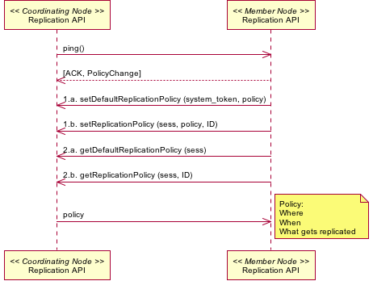

Use Case 08 - Replication Policy Communication¶
- Author
- VDC TWG
- Date
- 20090925 Adding to use case description and documentation
- 20090114 (TWG meeting). Subsequent various modifications.
- Version
- Draft
- Goal
- Communication of replication policy metadata between Member Nodes and Coordinating Nodes.
Summary
The replication policy of Member Nodes (MN) indicates factors such as the amount of storage space available, bandwidth constraints, the types of data and metadata that can be managed, and perhaps access control restrictions. This information is used by Coordinating Nodes (CN) to balance the distribution of data packages throughout the DataONE system to achieve the goals of data package persistence and accessibility.
- Actors
- Member Node, Coordinating Node
- Preconditions
- Member Node is registered with a Coordinating Node
- Member Node is operational
- Triggers
- A Member Node changes available capacity, bandwidth or some other operating characteristic
- A Member Node changes available services
- A Member Node software stack is updated (e.g. new version)
- Post Conditions
- The DataONE system is updated with current state of available resources
- Change in replication policy may trigger a re-synchronization (e.g. if storage capacity shrinks or is enlarged)
- Operation is logged
- Watchers are notified in change in DataONE system property
Notes
- The goal as stated originally for this use case was “Communication of replication policy metadata among Member Nodes and Coordinating Nodes.”
- There should be some restriction on how often replication policy can be changed to avoid thrashing that might occur for example, if a MN flips between significant differences in storage capacities (low to high, then low again).


Communication of Replication Policy Metadata